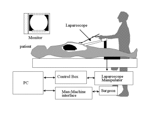
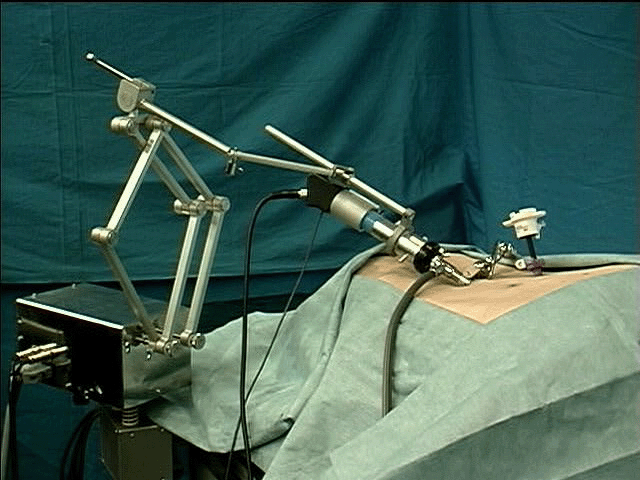
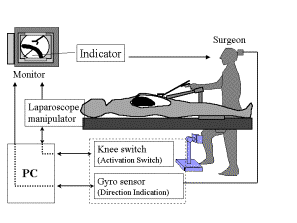
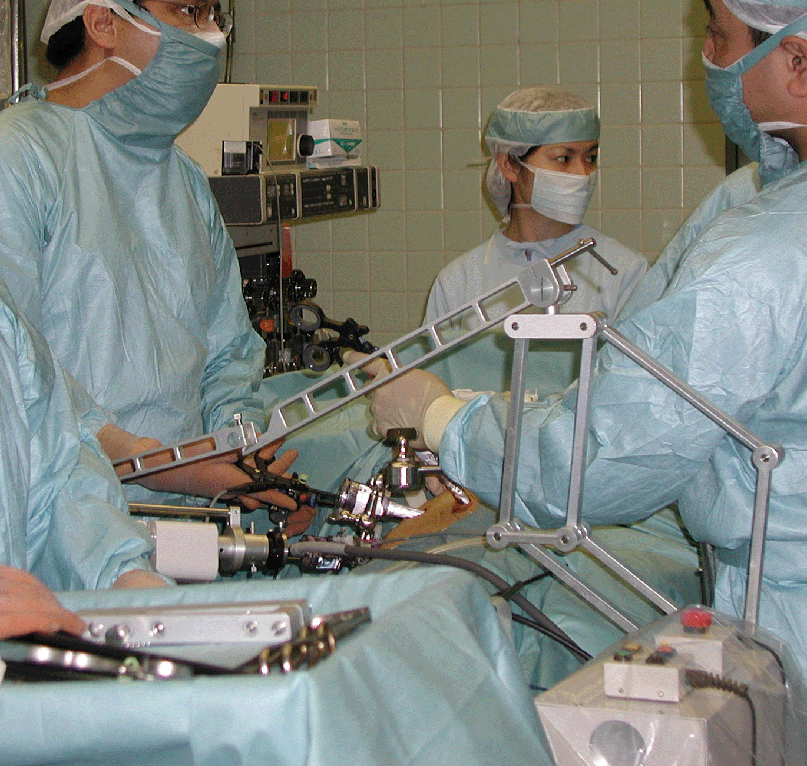

ラパロナビゲータの開発
要旨
現在腹腔鏡下手術は低侵襲手術として注目を浴び、普及している。本研究室ではこの手術の円滑な遂行に重要となる腹腔鏡操作を支援するために、ラパロナビ
ゲータの開発を行ってきた。これは腹腔鏡を保持し、望む方向へ術者自らが腹腔鏡を操作することを可能とする。ラパロナビゲータは術中使用するため、安全性
や術者の妨げにならないこと、滅菌可能であること等の術中使用特有のが要求される。本研究では、上記のような手術機器に特有の要求仕様に着目し、５節リン
ク機構と光学式ズームによるナビゲータを開発した。
はじめに
腹腔鏡下手術とは、体表に開けられた幾つかの小孔から腹腔内へ腹腔鏡や鉗子類を挿入して胆嚢摘出などの処置を施す術法であり、低侵襲であることから多く
の医療機関において行われている。この手術の問題点としては、内視鏡を保持しているカメラ助手と術者との意思疎通がうまくいかず術者の望む画面をすばやく
提示できないこと、また、手ぶれが生じ画面が安定しないといった点があり円滑な手術を行う上での妨げとなっている。
そこで、我々はこの問題を工学的に解決すべく、腹腔鏡を保持し術者の望む方向へ駆動するラパロナビゲータを開発してきた。
このラパロナビゲータは術中に使用することから十分な安全性、術者の妨げにならないこと等が要求される。そこで、５節リンク機構を用いることにより、より
安全で術中の使用に適したナビゲータを開発した。
システム構成
ラパロナビゲータのシステム構成図をFig.1に示す。腹腔鏡マニピュレータとマン・マシンインタフェースから構成される。ラパロナビゲータは術者は
CCDカメラを経てTVモニタ画面から得られる腹腔鏡像をもとにフットスイッチ等のインターフェイスを用いマニピュレータを操作する。
|  |
| Fig.1 The system configuration of manipulator for laparoscopic surgery |
マニピュレータの機構
内視鏡は挿入孔を中心とした上下左右の回転を行うことが望ましい。今回開発したマニピュレータは球面ジョイントにより内視鏡先端部を挿入孔付近で固定し、
内視鏡の他の端点を５節リンク機構を用いて2次元的な位置決めをすることにより内視鏡の角度制御を行う。また、画面の拡大縮小には光学式ズームを用いた
(Fig.2)。５節リンク機構とは下部の２つのリンクの角度を変えることにより、頂点の２次元的な位置を決定する機構である。
 |
| Fig.2 Mechanism of laparoscope manipulator using a five-bar linkage mechanism |
この５節リンクと光学式ズームによる機構を用いた利点としては、
- 駆動機構部を挿入孔から離れた位置に設置できるため、術者の作業領域を侵害せず、術者との衝突を避けられる。
- 駆動範囲が限定され予想範囲外の動きが無い。
- 剛性が高く安定した駆動が可能である。
- モータ等の電子部品は下部に置くことが出来るため、上部リンク部が取りはずして滅菌可能である。
といったことが挙げられる。特に、モータ等の駆動部とリンク機後部が上部、下部に分かれているため、リンク部を容易に着脱可能にすることにより駆動部はドレープを用い、術者と触れる可能性のあるリンク部は滅菌することができ、清潔が保たれる。
以上より本機構は安全・信頼性の面、駆動範囲、滅菌等の手術の運営面からも術中使用を十分に考慮したものであるといえる。
また、駆動部は電磁クラッチ及び電磁ブレーキが各軸に取り付けており、術者の手による粗動、緊急停止が可能である。その際アブソリュート型ロータリーエンコーダによる座標管理を行っているので初期位置の設定等が容易に行える。
本マニピュレータをFig.3 に示す。
|  |
| Fig.3 Laparoscope manipulator |
操作用インタフェース
腹腔鏡ナビゲータの操作用インタフェースとしては下記のものを開発してきた。
- 音声認識
- 頭部搭載型ジャイロセンサを用いたヘッドマウス
- 鉗子取付型手元スイッチ
Fig.4にヘッドマウスのシステム構成図を示す。
ヘッドマウスは頭部搭載型ジャイロセンサと膝スイッチ、インジケータで構成される。術者は頭を傾けることにより駆動方向を指示する。するとインジケータに
より術者が指示した方向が表示され、術者はこれを確認後膝スイッチをＯＮにしてマニピュレータを駆動する。ジャイロセンサとしてはデータテック社製ＶＲセ
ンサを用いた。これは、振動ジャイロと加速度センサからなり、３軸の角度・角速度データをRS232Cを介して制御用パソコンに伝送する（通信速度
9600bps）。頭部のわずかな動きで方向指示を行うため、手術作業の妨げにならず操作が可能である。
|  |
| Fig.4 System construction of the "Head-mouse" system using a gyro sensor and a knee switch |
鉗子取付型手元スイッチは、術者が頻繁に鉗子を取り替えない左手に取付、８方向の方向指示とズームイン・アウトの指示が可能である。
臨床応用
現在、九州大学との共同により臨床応用を開始している。手術は安全に行われ、ナビゲータは術者の反対側に設置し、手術作業の妨げとなることは無かった。操
作用インタフェースとして使用した手元スイッチは、術者が初めて使用したが、円滑な手術作業が可能であった。Fig.5には手術の様子を示す。
|  |
| Fig.5 Clinical application of the Laparo-Nvigator |
Related Papers:
| 1 |
小林英津子、正宗賢、鈴木真、土肥健純、橋本大定、腹空鏡ナビゲータ、ＢＭＥ、Vol.11, No.8, pp.40-45, 1997 |
| 2 |
Etsuko Kobayashi, Ken Masamune, Ichiro Sakuma, Takeyoshi Dohi, Daijo
Hashimoto, A New Safe Laparoscopic Manipulator System with a Five-Bar
Linkage Mechanism and an Optical Zoom, Journal of Computer Aided
Surgery, 4(4), 182-192,1999 |
| 3 |
小林英津子、正宗賢、鈴木真、土肥健純、橋本大定、５節リンクを用いた腹腔鏡下手術支援用内視鏡マニピュレータの開発、第５回日本コンピュータ外科学会論文集, pp.77-78, 1996 |
| 4 |
小林英津子、小関 義彦、正宗 賢、鈴木 真、土肥 健純、腹腔鏡下手術支援マニピュレータシステム、ロボティクス・メカトロニクス講演会'９６講演論文集（Vol.B）pp.977-978, 1996 |
| 5 |
小林英津子 正宗賢 鈴木真 土肥健純 橋本大定、頭部の動きを利用した腹腔鏡マニピュレータの操作用インタフェースに関する研究、第6回日本コンピュータ外科学会論文集, pp.85-86, 1997 |
| 6 |
小林英津子、正宗賢、佐久間一郎、土肥健純、橋本大定、５節リンク式腹腔鏡マニピュレータシステム－自動マイクロズームの開発と in vivo experiment -、第７回日本コンピュータ外科学会大会論文集, pp.77-78, 1998 |
| 7 |
小林英津子、中村亮一、正宗賢、佐久間一郎、土肥健純、橋本大定、腹腔鏡マニピュレータシステムにおけるマン・マシンインタフェースの比較検討評価、第８回日本コンピュータ外科学会大会論文集, pp.121-122, 1999 |
| 8 |
小林英津子、正宗賢、佐久間一郎、土肥健純、橋本大定、ラパロナビゲータの開発－臨床使用に向けた設計指針－、医用電子と生体工学第37巻秋季特別号,p.150, 1999 |
| 9 |
ETSUKO KOBAYASHI, KEN MASAMUNE, MAKOTO SUZUKI, TAKEYOSHI DOHI,et al.,
Development of a laparoscopic manipulator using five-bar linkage
mechanism, Computer Assisted Radiology and Surgery,
Germany,1997,pp.825-830(1997)(English) |
| 10 |
ETSUKO KOBAYASHI, KEN MASAMUNE, MAKOTO SUZUKI, TAKEYOSHI DOHI,et al.,
Head mouse system using the gyro sensor - the man-machine interface for
laparoscope manipulator, Proc. Computer Assisted Radiology 98, Tokyo,
742-746, 1998(English) |
| 11 |
E Kobayashi, K Masamune, T Dohi, D Hashimoto, A Newly Laparoscope
Manipulator with an Optical Zoom, Lecture Notes in Computer Science,
Proc. of MICCAI98, Boston, pp.215-222, 1998(English) |
| 12 |
E Kobayashi, K Masamune, I Sakuma, T Dohi, D Hashimoto, Quantitative
evaluation of the man-machine interface for a laparoscopic manipulator
system, Computer Assisted Radiology and Surgery, USA,2000,pp.111-115
(2000) (English) |
|